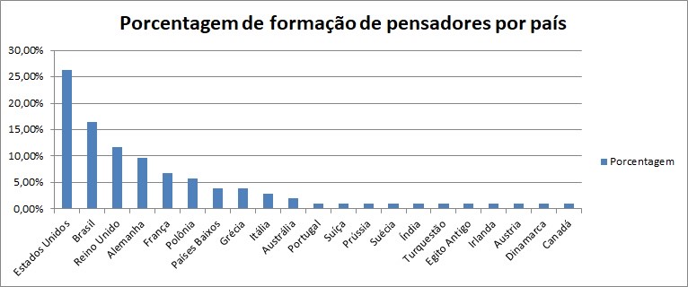
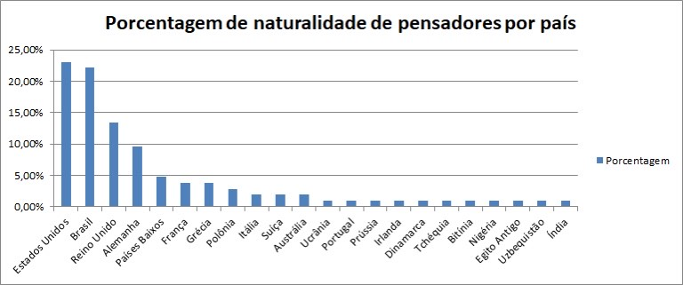
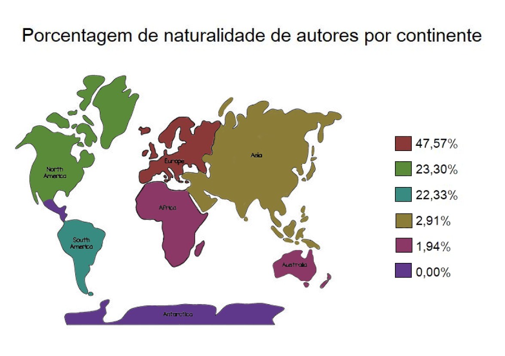

Pesquisa sobre filósofos que contém dados para a comprovação do eurocentrismo e um texto para a explicação do mesmo
Além disso, tem um autor importante para a criação de um assunto estudado na escola, que não é conhecido .
Eurocentrismo
Existem diversos filósofos e pesquisadores importantes que contribuíram para a sociedade e o mundo em geral e, por esse mesmo motivo, hoje tem suas conclusões e pesquisas estudadas em escolas e utilizadas por pessoas em diversos meios profissionais. Mesmo assim, alguns deles não são lembrados tão quanto deveriam e até mesmo podem acabar desvalorizados e esquecidos, dos quais perdem o seu posto na pesquisa e são algum pesquisador europeu.
O conceito eurocentrismo traz a ideia ao mundo como um todo de que a Europa e seus elementos culturais são a referência mais relevantes para o contexto de composição de toda sociedade moderna. Esse conceito influência nos estudos modernos, por exemplo, na educação dos estudantes quando praticamente 50% dos filósofos e pesquisadores estudados são da Europa.
Além disso, é importante ressaltar que o eurocentrismo é um tipo de etnocentrismo, mas ele só ocorre se a cultura de referência for a europeia. Já o etnocentrismo é o ato de julgar a cultura do outro baseado na sua própria leis, costumes, crenças, moral e hábitos, ou seja, de uma maneira mais generalizada. Além disso, a xenofobia é um tipo de preconceito que está intimamente relacionada as visões citadas anteriormente, visto que determina a aversão a estrangeiros pela sua cultura e lugar de nascimento.
Gráficos com dados por países
 
Divisão Continentes
Slides para mostrar quais são e como funcionam os gráficos.

Abu’l Wafa
Foi um astrônomo e matemático persa que trabalhou intensivamente na cidade de Bagdá, atual Iraque. Ele realizou inovações no campo da trigonometria esférica e seu estudo na aritmética como auxílio à matemática financeira é um dos primeiros exemplos do uso de números inteiros negativos.
Abū al-Wafaʾ, é creditado também também pela compilação de tabelas de senos e tangentes em intervalos de quinze minutos (15'). Introduziu o estudo das funções secante e cossecante, relacionadas às linhas trigonométricas associadas a um arco. O persa foi o primeiro a construir um muro quadrante para observar o céu, após influências das obras de al-Battani, principalmente Kitāb Az-zij.
Esse foi um dos pesquisadores matemáticos, muito importante para os estudos da trigonometria, focando mais para os senos e trangentes. Mesmo assim, ele não foi citado em nenhum momentos nos nossos estudos